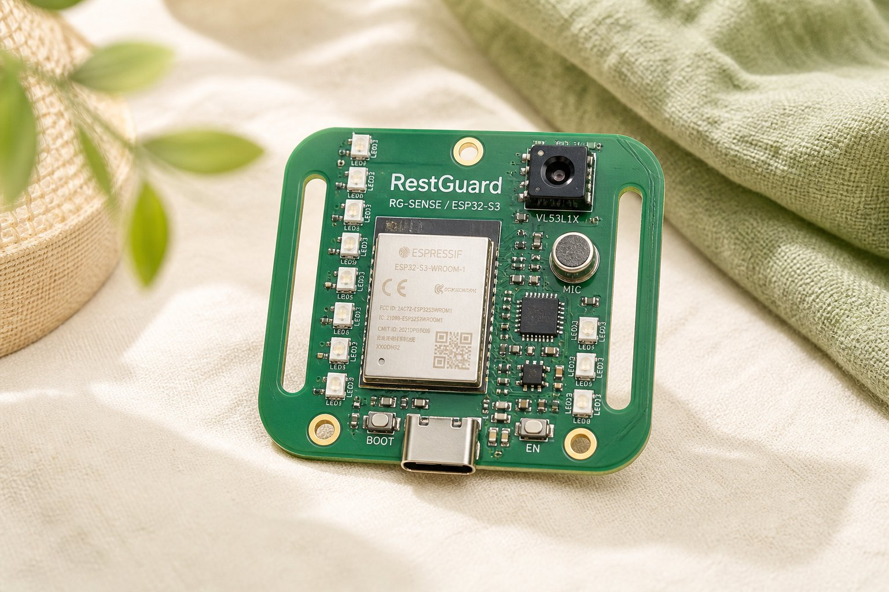
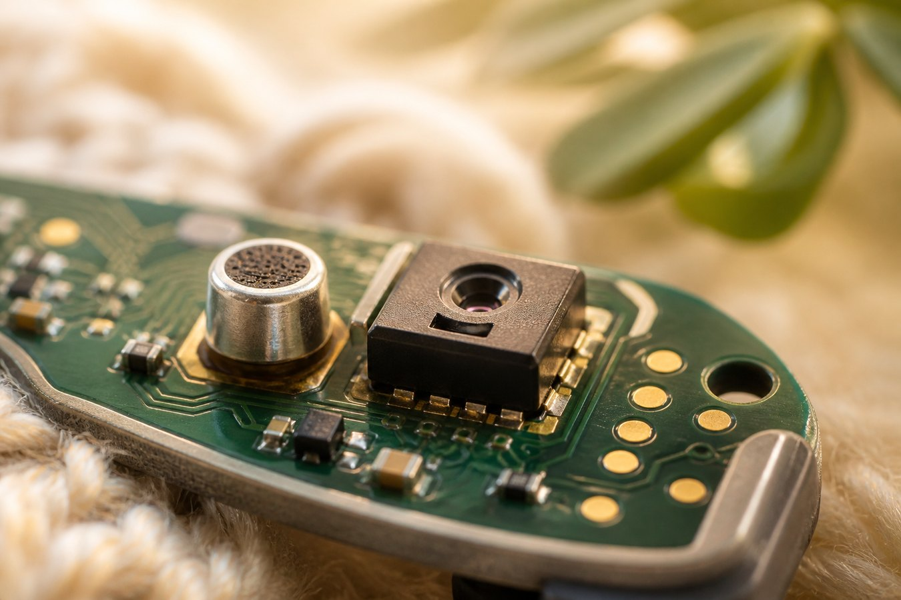
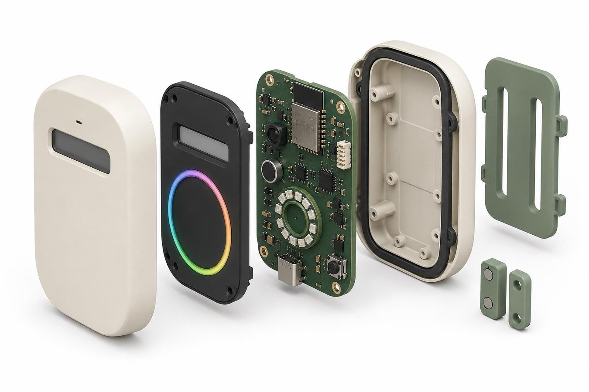

ESP32-S3
Enough local processing for a 1 Hz loop, hysteresis and a staff web page. Production still needs power and security review.
RG-SENSE / ESP32-S3
A compact, strap-slot carrier photographed like a wearable tracker — then deliberately kept off the body. Warm light, cream linen, sage in the room: the same palette as the portfolio, because the electronics should feel like care equipment, not a surveillance brick.

Specification
The board is the Level B heart of RestGuard: enough I/O to prove sensing and logic before a custom production PCB. Slots echo a wearable mount so the same plate can be bench-strapped, then moved to the sage enclosure plate.

Why these parts
Enough local processing for a 1 Hz loop, hysteresis and a staff web page. Production still needs power and security review.
Programmable ROI and a Class 1 emitter. Glass and visitor angle need site calibration; usable range is limited to the visitor zone.
Compact I²S input. Never treated as a certified meter, and never as a recorder.

Inside the 100 × 70 × 30 mm shell
Front shell, sensor bezel, electronics, silicone gasket, rear shell, sage mount. USB-C at the edge. Recessed staff button. Captive screws so the board can be replaced without throwing the enclosure away.